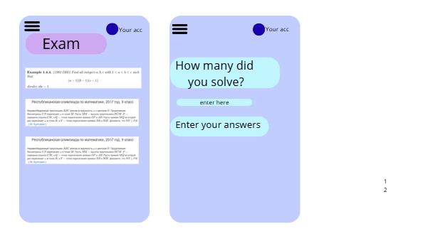

App Prototype & UI Mockups
Phone-first screen previews
Real App Screenshots


Structured learning with interactive problems and expert guidance
The Olympiad Math App is a comprehensive learning platform designed specifically for mathematics olympiad preparation. We provide structured, bite-sized lessons that guide students through challenging mathematical concepts, from basic foundations to competition-level problems.
Students struggle with olympiad mathematics because they lack quality structured guidance. Most platforms either oversimplify concepts or present problems without clear explanations. We bridge this gap by combining expert-level explanations with progressive problem-solving, just like learning from an experienced coach.
Olympiad mathematics develops critical thinking, problem-solving skills, and mathematical maturity. These skills are invaluable for future STEM careers and academic excellence. Yet access to quality preparation resources is limited for most students worldwide.
Structured Learning Path: Courses follow a logical progression, building knowledge systematically. Geometry Focus (Euclidea-style): We emphasize geometric reasoning with visual explanations and construction problems. Real Olympiad Problems: Every problem comes from actual competitions. Expert Guidance: Created by olympiad medalists who understand exactly what students need to succeed.
Step-by-step user flow from signup to mastery
Create your account with your email. Set your learning goals and preferred difficulty level to personalize your experience.
Select your focus area: Algebra (equations, polynomials, inequalities) or Geometry (constructions, proofs, theorems).
Explore specific topics like Miquel Point, Barycentric Coordinates, or Polynomial Invariants. Build a structured learning path.
Read detailed explanations with visual diagrams and worked examples. Understand concepts through expert-level teaching from olympiad mentors.
Practice with progressively harder problems. Test your understanding with practice problems, daily challenges, and olympiad-level exercises.
Receive detailed feedback on your solutions. View detailed explanations for incorrect answers. Earn badges and track your progress over time.
Phone-first screen previews

What educators think about the Olympiad Math App
Mathematics Teacher, International School
Olympiad Student, Grade 11
Meet the team behind the Olympiad Math App

Co-Founder & Lead Developer
Yertore is an accomplished olympiad student from Astana BIL, with international recognition in mathematical competitions. Through years of competition experience, Yertore has developed deep expertise in olympiad-level mathematics and problem-solving. His journey through dozens of competitions—from regional to international—and his success in the International Mathematical Olympiad (IMO) shaped his understanding of mathematics. Now, Yertore is sharing this hard-earned knowledge through Mathlearner, helping other students benefit from the strategies and insights he's gathered along the way.
Interesting Facts:

Co-Founder & Educational Director
Zh. Ilyas is a brilliant olympiad student and passionate educator from Astana BIL. With years of success in national and international mathematical competitions, Ilyas understands what it takes to excel in mathematics. His experience competing at the highest levels, combined with his natural ability to explain concepts clearly, makes him the perfect guide for students learning advanced mathematics. Through Mathlearner, Ilyas is fulfilling his passion for teaching by making olympiad knowledge accessible to everyone.
Interesting Facts:
We're not researchers or educational theorists. We're olympiad students who want to help others learn mathematics the way we did. Every feature in Mathlearner comes from our personal experience—the struggles we faced, the breakthroughs we had, and the techniques that finally made things click. We built this platform because we believe that the best way to learn mathematics is from someone who has been in your shoes and understands exactly what you're going through. Mathlearner is simply our knowledge, our experience, and our passion for mathematics, shared with you.
Rapid app development start: core flows, lesson engine, interface and mobile-first screens. Basic user path and interactive practice built as a phone app concept.
Finalization and internal preview. Polish UI for phone usage, adjust user onboarding, include student-created content and gamification paths. Prep for a mobile-first demo rollout.
We envision a world where every student, regardless of geographic location or economic background, has access to world-class olympiad mathematics education. The Olympiad Math App is more than just another learning platform—it's a movement to democratize access to mathematical excellence. By combining expert knowledge with modern technology, we're building the bridge between students' aspirations and their achievements.
Our goal is to become the go-to resource for olympiad preparation globally, trusted by students, recommended by teachers, and celebrated by the international olympiad community.